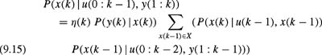

|
| |||||||||||||
|
|
||
Operating in the real world, robots lack the perfect sensors and deterministic actions of many artificial worlds. Rather, robots are faced with various kinds of uncertainty. In this chapter we continue to discuss probabilistic frameworks for typical fundamental tasks of mobile robots such as localization, mapping, and simultaneous localization and mapping (SLAM). While the methods presented in this chapter employ the same iterative prediction-update process that is used in the Kalman filter (see chapter 8), they do not rely on the restrictive assumptions required by the Kalman filter. The methods described here can use nonlinear models for both robot motion and sensing. Most important, the resulting estimate may be an arbitrary distribution instead of a Gaussian. Throughout this chapter we present the key ideas of successful techniques together with a derivation of their mathematical foundations. We will also discuss ways to efficiently implement these approaches, since the capability to represent arbitrary distributions can lead to higher computational demands compared to Kalman filters.
In the previous chapter, we achieved localization by maintaining a distribution of the robot by iteratively estimating the mean and covariance matrix of a Gaussian distribution. This way of representing a belief about the location of the robot assumes that there is no "ambiguity" in the sense that the distribution is always unimodal or more specifically a Gaussian. One form of localization in which this assumption is often met is position tracking, which assumes that the initial configuration of the robot is (approximately) known and whose task is to keep track of the robot's location while it is moving through the environment. If the robot's configuration is approximately known and if there is only a small region of uncertainty around the true location of the robot, the observations of the robot can usually be associated uniquely with the corresponding features in its map. Consider, e.g., that a robot knows its location up to a few centimeters. If it detects a door, it can use this observation to accurately compute its location given the door stored in its map of the environment. If, however, the uncertainty is high and the robot knows its location only up to several meters, there might be multiple doors in the map that its current observation can correspond to. Accordingly, the situation is ambiguous and a single Gaussian obviously cannot appropriately represent the robot's belief about its location.
In this chapter, we consider a form of position estimation where the robot may have ambiguity, i.e., the belief about its location can be modeled by a multimodal distribution. The techniques described in this chapter are able to deal with a more complex version of localization called global localization. Here the robot has to estimate its location under global uncertainty as it is not given its initial location. The techniques can also solve the most complex problem of robot localization, the so-called kidnapped robot problem. The kidnapped robot problem, or the relocalization problem, is more complicated than the global localization problem because the robot has generated a false belief of its most likely location which it must identify and "unlearn" before it can relocalize.
Before we delve into mathematical detail, let us illustrate the basic concepts with a simple example. Consider the environment depicted in figure 9.1. For the sake of simplicity, assume that the space of robot locations is one-dimensional, i.e., the robot can only move horizontally. Now suppose the robot is switched on somewhere in this environment to start its operation, but it is not told its location. Probabilistic localization represents this state of uncertainty by a uniform distribution over all locations, as shown by the graph in the top diagram in figure 9.1. Now assume the robot queries its sensors and finds out that it is next to a door. Probabilistic localization modifies the belief by raising the probability for locations next to doors, and lowering it elsewhere. This is illustrated in the second diagram in figure 9.1. Notice that the resulting belief is multimodal, reflecting the fact that the available information is insufficient to uniquely derive the robot's configuration. Also note that locations not close to a door still possess nonzero probability. This is because sensor readings are noisy, and a single sight of a door is typically insufficient to exclude the possibility of not being next to a door.
Now the robot advances to the next door. Probabilistic localization incorporates this information by propagating the belief distribution accordingly. To account for the inherent noise in robot motion, which in this situation inevitably leads to a loss of information, the new belief is smoother (and less certain) than the previous one. This is visualized in the third diagram in figure 9.1. Finally, the robot senses a second time, and again finds itself next to a door. This observation is combined with the current (nonuniform) belief, which leads to the final belief shown in the bottom diagram in figure 9.1. At this point, "most" of the probability is centered around a single location. The robot is now quite certain about its location.
Note that the final belief includes five different peaks given our sequence of two observations and one motion. The four smaller peaks correspond to the four cases in which the robot could only once explain its two observations given the map of the environment. At the location of the highest peak, which is in front of the second door at the true location of the robot, the robot has correctly identified a door twice. All other locations have small probabilities, since the robot could not explain its observations using its map.
Note that in this example the robot did not have an erroneous measurement. A false-positive detection of a door would lead to a situation in which the highest peak does not correspond to the true location of the robot. If, however, the robot knows about potential measurement errors, it would not become overly confident by just a few observations. One of the key features of probabilistic localization is that it uses the sensory information obtained to compute a belief that most accurately reflects the uncertainty about the configuration of the robot, given the knowledge about the behavior of the sensors of the robot.
Moreover, if the doors were uniquely identifiable by the robot, a Kalman filter would be sufficient for global localization. Since the robot is not able to identify the door it has sensed, it cannot associate an observation of a door uniquely to the doors given in its map. This problem is well-known as the data association problem. If the data association is known, Kalman filters can in fact be sufficient. Without knowing how to associate measurements to features in the map, the resulting beliefs will be inherently multimodal due to the resulting ambiguities. The strength of probabilistic localization lies in its capability to allow the representation of arbitrary distributions that are much more flexible than Gaussians. Put another way, probabilistic localization can also be applied when the data association is unknown or when the robot's motion models or sensor models are highly nonlinear.
Let X be the state space for the robot. We want to estimate the state x ? X of the robot, which essentially is its configuration given as its position and orientation. In probabilistic localization the robot estimates at every time step k the conditional probability P(x(k) | u(0 : k ? 1), y(1 : k)) over all possible configurations given the sensor information y(1 : k) it gathered about the environment and the movements u(0 : k ? 1) carried out. The term y(1 : k) denotes all observations obtained in the time steps 1,...,k. The notation y(1 : k) "unfolds" to y(1), y(2),...,y(k) and u(0 : k ? 1) unfolds in a similar fashion. The term P(x(k) | u(1 : k ? 1), y(1 : k)) is usually called the posterior probability (or simply posterior) [347]. Note that when u and y are written side by side, we assume that data have arrived in a synchronized way, i.e., in the form u(0), y(1),...,u(k ? 1), y(k). This assumption makes the derivation of probabilistic localization easier, but our algorithms can easily be extended to data streams that are not synchronized.
Note that in the previous chapter, u(k)was simply the control input. In this chapter, we denote it as movements and do not rely on a specific interpretation of u(k). It can represent the commanded velocities, the odometry measurements, or the result of filtering and fusing commanded velocities and odometry measurements, as described in the previous chapter.
Throughout this section we will assume that the robot is also given a model or map m of the environment. In principle we have to add this model as background knowledge in every term. However, for the sake of simplicity we will skip m in the equations below and assume that it is given as background knowledge. The heart of probabilistic localization is the following equation which tells us how to use the sensory input to update the most recent estimate (the prior)to obtain a new estimate (the posterior):
As mentioned above, the term P(x(k) | u(0 : k ? 1), y(1 : k)) is the posterior about the location of the robot at time k given the input data gathered so far. The term P(x(k ? 1) | u(0 : k ? 2), y(1 : k ? 1))), in contrast, is denoted as the prior as it quantifies the probability that the robot is at location x(k ? 1) before the integration of u(k ? 1) and y(k). The term P(y(k) | x(k)) is called the observation model which specifies the likelihood of the measurement y(k) given the robot is at location x(k). The term P(x(k) | u(k ? 1), x(k ? 1)) represents the motion model and can be regarded as a transition probability. It specifies the likelihood that the movement action u(k ? 1) carried out at location x(k ? 1) carries the robot to the location x(k). Finally, ?(k) is a normalization constant that ensures that the left-hand side of this equation sums up to one over all x(k). Note that (9.1) effectively accomplishes a combination of both the prediction and update steps of the Kalman filter.
Equation (9.1) is a special case of the following general equation for recursive Bayesian filtering.
Whereas (9.1) assumes discrete state spaces, (9.2) deals with continuous state spaces. Additionally, (9.2) can be shown to be a generalization of Kalman filtering. In this context the term P(x(k) | u(k ? 1), x(k ? 1)) is a generalization of (8.1) (see chapter 8) to arbitrary and nonlinear noise. Similarly, the term P(y(k) | x(k)) can handle arbitrary and nonlinear noise in the measurements. Finally, the posterior P(x(k) | u(0: k ? 1), y(1: k)) generalizes the belief representation of Kalman filters from Gaussians to arbitrary probability density functions (PDFs).
Note the recursive character of probabilistic localization. The belief at time k is computed out of the posterior at time k ? 1by incorporating two quantities, namely P(y(k) | x(k)) and P(x(k) | u(k ? 1), x(k ? 1)). Obviously, both the motion model and the observation model are the crucial components of probabilistic localization. Further below we will describe typical realizations of these models. We will also discuss different ways to represent the posterior P(x(k) | u(k ? 1), x(k ? 1)) and describe how to update the posterior given these representations.
Independent of the specific representation, the update of the belief is generally carried out in two different steps. The two steps are the prediction step and the update step which are joined together by (9.1). Note that the separation of a filtering process into these two steps is common in the context of Kalman filtering. The prediction step is applied whenever the belief has to be updated because of an odometry measurement u(k ? 1). Suppose u(0 : k ? 2) and y(1 : k ? 1) are the data obtained thus far and P(x(k ? 1) | u(0 : k ? 2), y(1 : k ? 1))) is the current belief about the configuration of the robot. Then we obtain the resulting belief P(x(k) | u(0 : k ? 1), y(1 : k ? 1)) by integrating over all possible previous configurations x(k ? 1). For each such x(k ? 1) we multiply P(x(k ? 1) | u(0 : k ? 2), y(1 : k ? 1)) by the probability P(x(k) | u(k ? 1), x(k ? 1)) that the measured motion action u(k ? 1) has carried the robot from x(k ? 1) to x(k) and compute P(x(k) | u(0 : k ? 1), y(1 : k ? 1)) as the sum over all these values, i.e.,
| (9.3) |
|
Note that this operation basically corresponds to the step depicted in the third diagram of figure 9.1.
The update step is carried out whenever the robot perceives a measurement y(k) with information about its environment. Suppose the current belief of the robot is P(x(k) | u(0: k ? 1), y(1: k ? 1)). In the update step we simply multiply for each configuration x(k) the current value P(x(k) | u(0: k ? 1), y(1: k ? 1)) with the likelihood of P(y(k) | x(k)) that the robot perceives y(k)given the map of the environment and given that the robot's configuration is x(k). Additionally, we multiply each value with a normalization constant that ensures that P(x(k) | u(0: k ? 1), y(1: k)) sums up to one over all x(k), i.e.,
According to Bayes rule, the constant ?(k) is given as
which generally is hard to compute. This is mainly because the dependency between consecutive measurements without any information about the location of the robot in general is hard to determine. However, if we apply the law of total probability, we can sum over all locations x(k) and transform (9.5) to
| (9.6) |
|
Obviously, we now can compute ?(k) using the terms that are already contained in (9.4). As we will see later, using this equation the normalization constant can be computed on the fly while integrating y(k) into the current belief.
To summarize, we have the following equations that completely describe the two individual steps of recursive Bayesian filtering and that correspond to the prediction and update steps also found in the Kalman filter:
prediction:
update:
In probabilistic localization the initial belief P(x(0)), reflects the prior knowledge about the initial configuration of the robot. This distribution can be initialized arbitrarily, but in practice two cases prevail. If the configuration of the robot relative to its map is entirely unknown, P(x(0)) is usually uniformly distributed, or if the initial state of the robot would be known up to a slight uncertainty, one would initialize P(x(0)) using a narrow Gaussian distribution centered at the robot's believed configuration.
The reader may notice that the principle of probabilistic localization leaves open
how the belief P(x) is represented as well as
how the conditional probabilities P(x(k) | u(k ? 1), x(k ? 1)) and P(y(k) | x(k)) are computed.
Accordingly, existing approaches to probabilistic localization mainly differ in the representation of the belief and the way the perceptual and motion models are represented. After a derivation of the equation for probabilistic localization in the following subsection, we will discuss different ways to represent the posterior. As we will see, the representation of the posterior has a serious impact on the efficiency of probabilistic localization and the type of situations that can be accommodated with probabilistic localization.
When computing P(x | u(0 : k ? 1), y(1 : k)), we distinguish two cases, depending on whether the most recent data item is an odometry reading or a sensor measurement.[1] Let us first consider how to incorporate the most recent data item, namely a sensor measurement y(k) the robot uses to gather information about its environment. If we apply Bayes rule considering y(1 : k ? 1) and u(0 : k ? 1) as background knowledge, we obtain
First consider the left term P(y(k) | u(k ? 1), y(1 : k ? 1), x(k)) in the numerator. This term represents the likelihood of the most recent measurement y(k)given all previous measurements and given that the configuration x(k)of the robot at time k is known. In recursive Bayesian filtering, one generally makes the assumption that, once the state x(k) is known, the measurement y(k) is independent of all previous measurements and controls. Given this assumption we can simply remove y(1 : k ? 1) and u(0 : k ? 1) from this term. Accordingly, we simplify (9.7) to
Observe that the denominator is a normalizer that does not depend on the configuration of the robot. It simply ensures that the left-hand side of (9.8) sums up to one over all x(k). Accordingly, we can replace the denominator by a normalization constant ?(k) which is the same for all x(k). This leads to
To see how to incorporate the motions of the robot into the belief we next consider the rightmost term P(x(k) | u(0 : k ? 1), y(1 : k ? 1)) in this equation. If we use the law of total probability we derive
To simplify the lefthand term in the sum we again make an independence assumption. We assume that x(k) is independent of the measurements y(1 : k ? 1) and the movements u(0 : k ? 2) obtained and carried out before the robot arrived at x(k ? 1) given we know x(k ? 1). Rather the likelihood of being at x(k) only depends on x(k ? 1) and the most recent movement u(k ? 1), i.e.,
| (9.11) |
|
Thus we simplify (9.10) to
Now consider the second factor P(x(k ? 1) | u(0 : k ? 1), y(1 : k ? 1)) in the sum. This term specifies the probability that the robot's configuration at time k ? 1is x(k ? 1) given the motions u(0 : k ? 1) and given the observations y(1 : k ? 1). According to our terminology, the motion u(k ? 1) is carried out at time step k ? 1 so that u(k ? 1) carries the robot away from x(k ? 1). Since we have no information about x(k) and under the assumption that the time that elapses between consecutive measurements is small, we can in fact conclude that the information that the robot has moved after it was at x(k ? 1) does not provide any information about x(k ? 1). Note that this is not true in general. Suppose the environment of the robot consists of two rooms, a small and a large room, and that there is no door between these two rooms. Furthermore suppose the robot moved a distance that is larger than the diameter of the small room. After that movement the probability that the robot is in the larger room must exceed the probability that the robot is in the smaller room. If, however, the time intervals between consecutive measurements are small, each movement can only represent a small distance and the fact that the robot has moved a few inches away from its current location x(k ? 1) carries almost no information about x(k ? 1) given we do not know x(k). Under this assumption we therefore can conclude that u(k ? 1) does not provide information about x(k ? 1) if we have no information about x(k). Thus, we assume that x(k ? 1) is independent of u(k ? 1) in the term P(x(k ? 1) | u(0 : k ? 1), y(1 : k ? 1)). Thus we obtain
| (9.13) |
|
and simplify (9.12) to
| (9.14) |
|
If we now substitute this result into (9.9) we obtain
| (9.15) | 
|
which directly corresponds to the (9.1).
As mentioned above, the probabilistic formulation leaves open how the posterior is represented. In principle, there are various ways to represent the posterior. Mathematically speaking, P is a function . When X is continuous (or infinite), P lives in an infinitely dimensional space. Of course it is impossible to arbitrarily represent an infinitely dimensional map. Thus we have to be content with a finite approximation. Throughout this section we discuss three different approaches: Kalman filters, discrete approximations, and particle filters.
The previous chapter covered a common approach to the representation of the belief P(x(k) | u(0: k ? 1), y(1: k)) as Extended Kalman filters (EKFs) [215,390]. In this case, the posterior is represented using a unimodal Gaussian distribution. Many successful applications of Kalman filters for mobile robot localization have been demonstrated [28,179,276,371]. One advantage of Kalman filtering is that it can be implemented quite efficiently and that it works well in high-dimensional state spaces. Additionally, Kalman filters provide a floating-point resolution and in this way allow highly accurate estimates.
Unfortunately, Kalman filters are only optimal for systems whose behavior is governed by the linear equations given by (8.1) and (8.2). Since Kalman filters use Gaussian distributions, they cannot appropriately represent beliefs that correspond to ambiguous situations as they appear, e.g., in the context of global localization. As a result, localization approaches using Kalman filters typically require that the starting location of the robot is known or that unique landmarks are given so that there is no data association problem. To overcome the limitations of Kalman filters, recent extensions of this approach have been developed. For example, Jensfeld and Christensen [209] use a mixture of Gaussians to represent the belief about the location of the robot. They also present techniques to update this mixture based on sensory input and robot motions. In this chapter, we consider two alternative nonparametric state representations-discrete grids and samples-to bypass the Gaussian assumption.
An alternative form to represent P(x(k)) is to use a discrete approximation of the configuration space. Independent of the structure of the discretization all approaches store in each element of their discrete structure the probability that the robot is at the location that corresponds to this element. In practice, one mainly finds topological and geometric discretizations. In the first case, the configuration space is separated according to the topological structure of the environment. Many systems that exploit topological structures use individual states for junctions, door-ways and rooms and four possible headings. Several systems [213, 339, 386] follow this approach and perform probabilistic localization for landmark-based corridor navigation. Choset and Nagatani exploit the topology of the generalized Voronoi diagram (GVD) [108], described in chapter 5. The advantage of a topological representation lies in its compactness, because only a limited number of states need to be considered. Its disadvantage, on the other hand, is limited accuracy with respect to position and orientation. To achieve more accurate estimates, Burgard, Fox, and coworkers [83, 158] use a fine-grained grid to represent the posterior. Throughout this section we will give a detailed description of this grid-based technique.
If we assume that the configuration of the robot is SE(2) and thus a configuration is represented by a three-dimensional random vector consisting of the (xr, yr )-position and the orientation ?r of the vehicle, our grid needs to be three-dimensional. Whereas the first two dimensions are used for the position of the vehicle, the third dimension is used for its orientation. Figure 9.2 shows the structure of the grid for this kind of representation. In practical applications of this technique, spatial resolution of 10 to 30 cm and an angular resolutions of 2 to 10 degrees turned out to be sufficient for robust and accurate localization of mobile robots [81,177].
To compute the posterior P(x(k) | u(0 : k ? 1), y(1 : k)) represented by a grid we follow the procedure summarized in Algorithm 16. Given u(0 : k ? 1), y(1 : k) and an initial belief P(x(0)), we carry out k loops. In the every round i we integrate u(i ? 1) and y(i). The first step (i.e., the prediction step) incorporates the movement u(i ? 1), which means that we have to recompute the grid according to the motion model P(x | u(i ? 1), x?). In principle, this involves integrating over all possible prior states of the robot, which would result in an O(N2) complexity, where N is the number of states represented by the grid. One way to reduce the complexity of this operation is to limit the number of predecessor states summed over. In a successful implementation of the grid-based representation Fox, Burgard and Thrun [158] applied the following approach to approximate the integration over all potential previous states: First, all grid cells are shifted according to the motion u(i ? 1) carried out by the robot, and then the whole grid is convolved using a bounded Gaussian kernel that corresponds to the uncertainty of u(i ? 1). Whenever the robot has moved, we can easily compute for every (x, y)-plane of the grid the offsets ?x and ?y by which each cell has to be shifted according to u(i ? 1) (and assuming there are no odometry errors). Please note that ?x and ?y both depend on the angle ? that the corresponding plane in the grid represents. The convolution operation can be carried out efficiently using a separable kernel. This involves convolving independently over the individual dimensions of the grid. To realize this, one usually introduces a one-dimensional array P? that stores the intermediate results of this computation. In the case of the x-dimension we proceed as follows for all x:
Input: Sequence of measurements y(1 : k) and movements u(0 : k - 1) and initial belief P(x(0)) Output: A posterior P(x(k) | u(0 : k - 1), y(1 : k)) about the configuration of the robot at time step k 1: P(x) ? P(x(0)) 2: for i ? 1to k do 3: for all states x ? X do 4: P?(x) ? ?x ??X P(x | u(i - 1), x?) P(x?) 5: end for 6: ? ? 0 7: for all states x ? X do 8: P(x) ? P(y(i) | x) P?(x) 9: ? ? ? + P(x) 10: end for 11: for all states x ? X do 12: P(x) ? P(x)/? 13: end for 14: end for
| (9.16) |
|
Special care has to be taken at the borders of the grid. In this case only one neighboring cell is given and one chooses the coefficients  for the cell itself and for the neighbor cell (x +1or x ? 1 depending on where one is in the grid). Whenever P?((x, y, ?)) has been computed for all x and a given pair of y and ?, the results are then stored back in the original cells. Similarly we proceed with all y and ?. To correctly model the uncertainty introduced by the motion u(i ? 1) the convolution process can be repeated appropriately. The second step (i.e., the update step) of Algorithm 16 integrates the observation y(i) into the grid. To achievethis, we simply multiply every grid cell by the likelihood of the observation y(i), given the robot has the configuration corresponding to that particular cell. Afterward the whole grid is normalized.
for the cell itself and for the neighbor cell (x +1or x ? 1 depending on where one is in the grid). Whenever P?((x, y, ?)) has been computed for all x and a given pair of y and ?, the results are then stored back in the original cells. Similarly we proceed with all y and ?. To correctly model the uncertainty introduced by the motion u(i ? 1) the convolution process can be repeated appropriately. The second step (i.e., the update step) of Algorithm 16 integrates the observation y(i) into the grid. To achievethis, we simply multiply every grid cell by the likelihood of the observation y(i), given the robot has the configuration corresponding to that particular cell. Afterward the whole grid is normalized.
Algorithm 16 can also be used for incremental filtering. If the initial belief is set to the output obtained from the preceeding application of the algorithm and if all measurements and movements since this point in time are given as input, the algorithm incrementally computes the corresponding posterior. Please also note that Algorithm 16 can easily be extended to situations in which the movements and the environment measurements do not arrive in an alternating and fixed scheme.
One important aspect of all state estimation procedures is the extraction of relevant statistics such as the mean and the mode. These parameters are important whenever the robot has to generate actions based on the current belief about its state. For example, this can be the next motion command to enter a specific room. Both the mode and the mean can be determined efficiently given a grid-based approximation. The x- and y-coordinates of the mean ( and ) can be computed by computing the weighted sums i = 1,...,N over all cells of the grid. To compute the angle mean we use the following equation:
| (9.17) |
|
Unfortunately, the mean has the disadvantage that the resulting values can lack any useful meaning, especially in the context of multimodal distributions. For example, the mean of a bimodal distribution might lie within an obstacle so that no meaningful commands can be generated. An alternative statistic is the mode of the distribution which, given a grid-based approximation, can be computed efficiently by a simple maximum operation. Compared to the mean, the mode has the advantage that it generally corresponds to a possible location of the vehicle. However, the locations of subsequent modes can differ largely so that the estimates are not as continuous as if we choose the mean. Whereas the mean automatically yields estimates at subgrid-resolution accuracy, we can obtain the same for the mode by averaging over a small region around the cell containing the maximum probability [82].
To illustrate an application example of a grid-based representation, consider the map and the data set depicted in the left image of figure 9.3. The map, which was generated using the system described by Buhmann and coworkers [73], corresponds to the environment of the AAAI '94 mobile robot competition. The size of this environment is 31 by 22 m. The right image of the same figure depicts the path of the B21 robot Rhino [415] along with measurements of the twenty four ultrasound sensors obtained as the robot moved through the competition arena. Here we use this sensor information to globally localize the robot from scratch. The time required to process this data on a 400 MHz Pentium II is 80 seconds, using a position probability grid with a spatial resolution of 15 cm and an angular resolution of 3 degrees.
The right image of figure 9.3 also marks the points in time when the robot perceived the fifth (A), eighteenth (B), and twenty-fourth (C) sensor sweep. The posteriors during global localization at these three points in time are illustrated in figure 9.4. The figures show the belief of the robot projected onto the (x, y)-plane by plotting for each (x, y)-position the maximum probability over all possible orientations. More likely locations are darker and, for illustration purposes, the left and middle images use a logarithmic scale in intensity. The leftmost image of figure 9.4 shows the belief state after integrating five sensor sweeps (i.e. when the robot is at step A on its path). At this point in time, all the robot knows is that it is likely in one of the corridors of the environment. After integrating eighteen sweeps of the ultrasound sensors (at step B) the robot is almost certain that it is at the end of a corridor (see center image of figure 9.4). After incorporating twenty-four scans (step C) the robot has determined its location uniquely. This is represented by the unique peak containing 99% of the whole probability mass (see rightmost image of figure 9.4).
Although the grid-based approach has the advantage that it provides a well-understood approximation of the true distribution and that important statistics such as the mean and the mode can be easily assessed, it has certain disadvantages. First, the number of grid cells grows exponentially in the number of dimensions and therefore limits the application of this approach to low-dimensional state spaces. Additionally, the approach uses a rigid grid. If the whole probability mass is concentrated on a unique peak, most of the states in the grid are useless and approaches that focus the processing time on regions of high likelihood are preferable. One method to dynamically adapt the number of states that have to be updated is the selective updating scheme [158]. Burgard, Derr, Fox, and Cremers [82] use a tree structure and store only cells whose probability exceeds a certain threshold. In this way, memory and computational requirements can be adapted to the complexity of the posterior.
An alternative and efficient way of representing and maintaining probability densities is the particle filter. The key idea of particle filters is to represent the posterior by a set of N samples. Each sample consists of a pair (x, ?) containing a state vector x of the underlying system and a weighting factor ?, i.e., . The latter is used to store the importance of the corresponding particle. The posterior is represented by the distribution of the samples and their importance factors. In the past a variety of different particle filter algorithms have been developed and many variants have been applied with great success to various application domains [97,125,138,157,167,201,218]. Algorithm 17 describes a particle filter algorithm that uses sequential importance sampling with resampling [29] to implement the update step. This algorithm follows a survival of the fittest scheme. Whenever a new measurement y(k) arrives, the weight ? of a particle (x, ?) is computed as the like-lihood p(y(k) | x) of this observation given the system is in state x. After computing the weights, a so-called resampling procedure is applied. We draw N samples with replacement from such that each sample in is selected with a probability that is proportional to its weight ?. Accordingly, samples with greater weights survive with higher likelihood than samples with values of small importance. In principle, there are many ways of achieving this. One popular approach (see also [29]) is described by algorithm 18. In this algorithm, the procedure rand(I) draws a random value from the interval I according to a uniform distribution. The major advantage of this algorithm is that the whole resampling process is carried out in O(N) steps. One alternative technique is the one used by Isard and Blake [201]. This approach relies on binary search to select a sample and thus requires O(N log N) steps.
Input: Sequence of measurements y(1 : k) and movements u(0 : k - 1) and set
of N samples (xj, ?j) corresponding to the initial belief P(x)
Output: A posterior P(x(k) | u(0 : k - 1), y(1 : k)) about the configuration of the
robot at time step k represented by .
1: for i ? 1 to k do
2: for j ? 1 to N do
3: compute a new state x by sampling according to P(x | u(i - 1), x j).
4: xj ? x
5: end for
6: ? ? 0
7: for j ? 1 to N do
8: wj = P(y(i) | xj)
9: ? = ? + wj
10: end for
11: for j ? 1 to N do
12: wj = ?-1 wj
13: end for
14:  15: end for
15: end for
We also need to describe the prediction step that we use to incorporate the motions of the robot into the sample set. Throughout this chapter we assume that incremental motions of a robot between two configurations x1 and x2 are encoded by the three parameters ?, ?, and d (see figure 9.5). Here ? is an initial rotation in x1 toward x2, d is the distance to be traveled from x1 to x2, and ? is the final rotation carried out at the location x2 to reach the orientation of the robot in x2. Since the motions carried out by the robot are not deterministic, we need to cope with potential errors when we compute new locations for samples. We proceed as follows: Whenever we compute the new configuration for a sample after a movement u(i ? 1), we incorporate the possible deviations from the values of ?, ?, and d. Throughout this section, we assume Gaussian noise in these values and compute the new location of a sample according to values ??, ??, and d? that deviate from the measured values ?, ?, and d according to Gaussian distributions. If we denote the robot state as x = [xr, yr, ?r] and the ith particle by xi, then the motion model is implemented by assigning
| (9.18) |
|
for each particle in the collection, where
Here norm(?) is a random number generator that outputs random numbers according to a normal distribution with mean 0 and standard deviation ?. The standard deviations ?i are parameters that describe the influence of the translation d and the rotations ? and ? on the potential errors. In this model the errors in all three values depend on the rotations and the translation carried out. Note that the ?i can be learned by generating a statistic about typical deviations of the actual movements from the values ?, ?, and d.
Figure 9.6 illustrates an application of this motion model to a sample set in which all samples are concentrated in a single state. The line depicts the path taken by the robot and the sample sets illustrate the belief about the robot's configurations at certain points in time. In this particular example we incorporated no observations of the environment into the sample set. As can be seen from the figure, the robot's uncertainty grows indefinitely while it is moving, and the overall distribution is slightly bent.
Note that the motion model described above does not incorporate any information about the environment. Accordingly, samples might end up inside obstacles in the map of the environment. One advantage of sample-based approaches, however, lies in the fact that such environmental information can easily be incorporated. To avoid that samples move through obstacles we can simply reject such values for ??, ??, and d?.
To extract the mean of a posterior represented by N samples, we can proceed in a similar way as for the grid-based representation. We simply average over all samples of the distribution. In the case that not all importance factors are equal we use the normalized importance factors as weighting factors. When computing the mode, we distinguish two different situations. If we compute the mode just before the resampling step, we can simply select that sample with the highest importance factor, which requires O(N ) steps. After resampling, however, the mode cannot be computed as easily, because the actual form of the posterior is only encoded in the density of the samples. One popular approach to approximate the mode is to use kd-trees [44], which, however, requires O(N log N ) steps. Alternatively, one can compute a histogram based on a coarse discretization of the state space. In this case, the space requirements are similar to the grid-based approach, but the mode can be extracted in O(N) steps.
Figure 9.7 shows a particle filter in action. This example is based on the ultra-sound and odometry data obtained while the robot traveled along the path depicted in figure 8.1 in chapter 8. To achieve global localization we initialized the filter by selecting the initial set of particles from a uniform distribution over the free space in the environment (see left image of figure 9.7). After incorporating ten ultrasound measurements we obtain the particle set depicted in the middle image of figure 9.7. After incorporating 65 measurements, the particle filter has converged to configurations close to the true location of the robot. The resulting density is depicted in the right image of figure 9.7.
Figure 9.8 shows the path of a robot as it is estimated by a particle filter. Here the particle filter was initialized using a Gaussian distribution and therefore was just tracking the location of the robot. Again, the odometry data used as input are shown in figure 8.1. Additionally, the filter used the data of the 24 ultrasound sensors. As can be seen, the particle filter can robustly track the position of the robot, although ultrasound measurements are noisy and there are larger errors in odometry.
As the global localization example illustrates, particle filters typically converge to the most likely estimate, i.e., after a certain period of time all of the particles usually cluster around the true configuration of the system. While this is desired in most situations, it also can be disadvantageous. This is especially true if a failure occurs that is not modeled in the motion model. One typical scenario in which such unpredicted localization errors frequently occur is the RoboCup environment [237]. There are certain conditions under which a referee removes a player from the soccer field. After a short period of time the player is then placed back onto the field. The problem that has to solved by the robot in such a case is usually denoted as the "kidnapped robot problem" [145]. To deal with such situations, or more generally, with situations in which the estimation process fails, the robot requires techniques to detect localization failures and to initiate a global localization. One approach is to modify the motion model and to choose random configurations for a certain fraction of the samples [156]. Alternatively, one can monitor the average observation likelihood of all samples. For example, Burgard et al. [82] restart a global localization if this value falls below a certain threshold. Lenser and Veloso [275] adjust the number of samples with randomly chosen locations according to the value of . Gutmann and Fox [176] additionally smooth to be more robust against short-term changes of .
One of the crucial aspects of probabilistic localization is how the likelihood of the robot's sensor measurements is computed. In particular, we are interested in the quantity P(y | x), which represents the likelihood of measuring y given x is the location of the system. Throughout this chapter, we denote the way in which we compute this quantity as the sensor model. Obviously, a good sensor model largely depends on the type of sensor that is used for localization. Additionally, it also may depend on the environment. For example, it might exploit particular features of the environment, such as landmarks. Finally, it also depends on the way the environment is represented, i.e., on the type of the map.
In this subsection we describe a sensor model that captures several of the physical properties of frequently used proximity sensors such as ultrasound or laser range scanners. To motivate this sensor model let us first investigate a typical scan obtained with the 24 ultrasound sensors of a B21 robot. One such scan is shown in figure 9.9. In this figure the objects in the environment are shown in light gray. The dark lines indicate the central axis of 24 ultrasound beams as they are obtained at the corresponding location in this environment. As can be seen from the figure, most of the measurements are quite accurate. For example, the beams 0, 2, 3, 4, 10, 13, and 15 quite accurately correspond to the distance to the nearest obstacle in the measurement direction. Other beams, such as 1, 12, and 14, are shorter than the distance to the nearest obstacle. In this particular situation, the measurement 1 resulted from a crosstalk: the sensor received a sound signal emitted by another sensor [61]. The other two short measurements (12 and 14) were caused by objects not contained in the map. Whereas beam 12 was reflected by a person entering the room, the cone of beam 14 was echoed by a refrigerator installed in the niche. Furthermore, some of the measurements, such as 18, 19, and 20, appear to be quite random. They apparently pass through a bookshelf and appear to be echoed by an unmodeled object behind it. Finally, the sensors 6, 8, and 23 never received an echo and therefore report a maximum range reading.
The sensor model that we describe in the remainder of this subsection is designed to capture the noise and error characteristics of many active range sensors. It can model the accuracy of the sensor whenever the beam hits the nearest object in the direction of the measurement. Additionally, it represents random measurements. It furthermore provides means to model objects not contained in the map and to represent the effects of crosstalk between different sensors. Finally, it incorporates a technique to deal with detection errors in which the sensor reports a maximum range measurement. The model has been applied successfully in the past for mobile robot localization with proximity sensors such as ultrasound sensors and laser range finders. In 1997 and 1998 [81] the mobile robots Rhino and Minerva operated several weeks in populated museum environments using the sensor model described here for localization with laser range scanners.
Throughout this subsection we assume that range sensors have a limited numerical resolution, i.e., the information they provide is discrete. Accordingly, we consider a discrete set of distances d0,...,dn?1 where dn?1 corresponds to the maximum distance that can be measured. We also assume that the size of the ranges ? = ?i+1 = di+1 ? di is the same for all i. In principle, the distribution P(y | x) that y is observed given the state of the system is x can be specified by a histogram that stores in each of its n bins the likelihood that y is di, i = 0, 1, ... n ? 1. Obviously, storing an individual histogram for sufficiently large number of potential states would consume too much space.
The key idea of the model that we describe here is to compute P(y | x) based on the distance d(x) to the closest obstacle in the map within the perceptual field of the sensor. If the environment is represented geometrically, i.e., by an evidence grid or by geometric primitives such as polygons or lines, the expected distance d(x) can be computed efficiently using ray-casting. It is natural to assume that
| (9.22) |
|
Accordingly, it suffices to determine the expected distance d for the given measuring direction at the current location of the vehicle and then compute P(y | d).
The quantity P(y | d) is calculated as follows. According to the different situations identified in the scan depicted in figure 9.9, we distinguish the following four situations:
The nearest object in the direction of the beam is detected. The actual measurement depends on the accuracy of the underlying sensor. Typically, the likelihood of the measurement y is then well-approximated by a Gaussian distribution , where d is the true distance to the object and the variance ? depends on the accuracy of the sensor; it is higher for ultrasound sensors than for laser range scanners.
An object not contained in the map reflects the beam, or there is crosstalk. The sensor will report a distance that is shorter than the expected distance. In our model, we represent this by an exponential distribution, e.g., ?e??y.
The sensor produces a random measurement. As mentioned above, there are situations in which the sensor provides a random measurement that cannot be explained given the current map. We model these types of measurements by a uniform distribution over the possible distances reported by the sensor, represented by a constant ?.
The sensor reports a maximum range reading. In some situations, time-of-flight sensors such as ultrasounds or laser range scanners, or intensity-based sensors such as those based on infrared light fail to detect the beam reflected by an object. If no random measurement is obtained and if no crosstalk happens, the sensor may report a maximum range measurement. The likelihood of this event is represented by a constant ?.
Since we do not know which situation is given, our distribution needs to represent all the different cases. Accordingly, the distribution P(y | d) is computed based on a mixture of the four different densities that correspond to the individual situations. Suppose di is the expected distance in a particular measurement direction at a given position in the environment. Then we determine a complete histogram hi containing in each bin hi, j the likelihood of each possible measurement dj the robot can obtain. If j < n ? 1, i.e., the actual measurement is not a maximum range measurement, hi, j is computed based on a mixture of the three densities representing the situations 1, 2, and 3 described above. If, however, j = n ? 1, then we have a single value representing the likelihood of maximum range measurements.
The values of the parameters ?i, ?i, ?i, ?i and ?i have to be chosen appropriately such that each hij reflects the correct likelihood. Thereby, we have to consider the constraint that
| (9.24) |
|
for each histogram hi. A typical approach to determine the optimal values for the different parameters of each histogram is log-likelihood maximization. Given a set of actual measurements for a given expected distance di this approach seeks to determine those values for the parameters that maximize the sum of the log likelihoods log P(d | di) over all measurements in the data set.
Figures 9.10 and 9.11 show the resulting maximum-likelihood approximations for two different expected distances. Whereas figure 9.10 plots the histograms for ultrasound data, figure 9.11 plots the histograms obtained for laser range data. In all plots, the data are shown as boxes and the approximation is shown as dots. As can be seen, our model is quite accurate and reflects well the properties of the real data. It is furthermore obvious that the laser range finder yields much more accurate data than the ultrasound sensor. This is represented by the fact that the Gaussians have a lower variance in both histograms. Please also note that the variances of the Gaussians do not depend solely on the accuracy of the sensor. They also encode the uncertainty of the map. For example, if dynamic objects such as chairs or tables are slightly moved, the error in the measurements increases, which results in a higher uncertainty of the sensor model.
Range scans obtained with laser range scanners typically consist of multiple measurements. Some robots are also equipped with arrays of ultrasound sensors which provide several measurements y1, y2, ... ym at a time. In practice it is often assumed that these measurements are independent, i.e, that
| (9.25) |
|
In general, however, this assumption is not always justified, e.g., if the environment contains objects that are not included in the map. In such a situation, the knowledge that one measurement is shorter than expected raises the probability that a neighboring beam of the same scan that intercepts a region close to the first measurement is also shorter. A popular solution to this problem is to use only a subset of all beams of a scan. For example, Fox et al. [158] typically used only 60 beams of the 181 beams of a SICK PLS laser range scan.
Finally, we want to describe some aspects that might be important when implementing this model. The first disadvantage of this model is that one has to perform a ray-casting operation for every potential state of the system. In a grid-based representation of the state space this involves a ray-casting operation for every cell of the grid. If a sample-based representation is used, the same operation has to be performed for every sample in the sample set. One approach to reduce the computation time is to precompute all expected distances and to store them in a large lookup table. Given an appropriate discretization of the state space, the individual entries of this table can be accessed in constant time. If, furthermore, one limits the resolution of the range data such that each beam can have no more than 256 values, only one byte is needed for each entry of the table. In this case, also, the number of histograms for the computation of P(y | d) is limited. We only need 256 histograms with 256 bins each.
A further disadvantage of this approach is that the likelihood function sometimes lacks smoothness with respect to slight changes of the locations of the robot. For example, consider a situation in which a laser range finder points into a doorway. If we move the robot slightly, the beam might hit the adjacent wall. Alternatively, consider a beam that hits a wall at a small angle. Slight changes in the orientation of the robot in this case have a high influence on the measured distance. In contrast to that, if the beam is almost perpendicular to a wall, slight changes of the orientation of the robot have almost no influence on the measured distance. One way to solve this problem is to also consider the variance of the expected measurement. This variance can also be computed beforehand by integrating over the local neighborhood of the state x.Given an appropriate discretization of the variances, the histograms then have to be learned for each pair of expected distances and variance. Both techniques, the compact representation of expected distances and the integration of the variance of the expected distance with respect to slight changes in the location of the robot, have been used successfully in Rhino and Minerva [81,158,414].
Note that several alternative models have been proposed in the past. The goal of all these models is to provide robust and accurate estimates of the location of the robot. Forexample, Moravec [324] and Elfes [143], who introduced occupancy grid maps, also presented a probabilistic technique to compute the likelihood of ultrasound measurements given such a map and the position of the robot. Yamauchi and Langley [430] compared local maps built from the most recent measurements with a global map. The sensor models proposed by Konolige [245] and Thrun [412] are more efficient than the model presented here since they avoid the ray-casting operation and only consider the endpoint of each beam. Finally, Simmons and Koenig [386] extracted doorways and corridor junction types out of local grid maps and compared this information to landmarks stored in a topological representation of the environment.
[1]These two cases are analogous to the Kalman prediction and update steps, respectively.
|
|
||
|